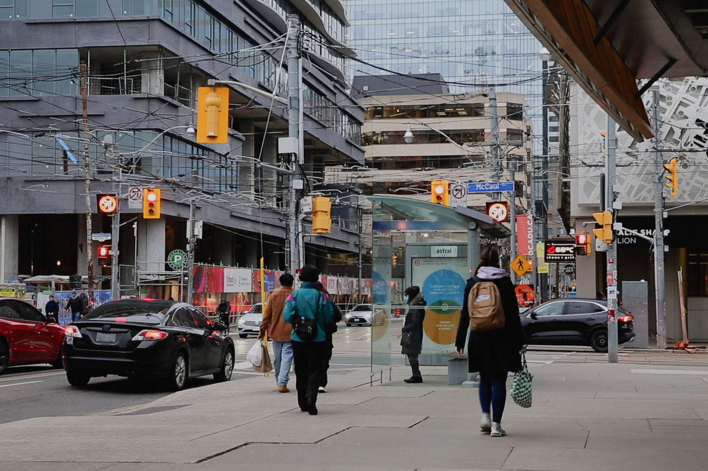

SHADOWS OF FREEDOM
Director / Production Coordinator / Editor

- Type:
- Independent Student Production - Documentary
- DESCRIPTION:
- This documentary follows the personal journey of a Hong Kong international student as she navigates the intricate process of securing Permanent Residency in Canada. This film explores her experience of adapting to a new environment, facing uncertainty, and working toward a future far from home.